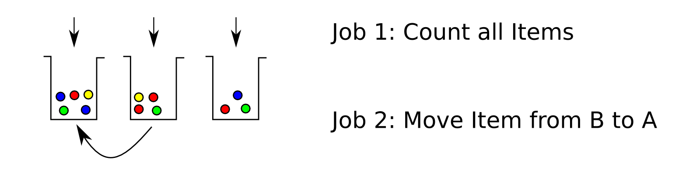

Out of the Tar Pit
Rasmus Buchmann
& Maximilian Klein
Last Talk
We want to write
Programs
Biggest Obstacle?
Stuff doesn't work ™
Biggest Obstacle?
Stuff doesn't work ™
The question is: Why?
"Out of the Tar Pit"
One cannot hope to develop, maintain or improve a large program if
one is unable to understand it
Understanding the Tar Pit
Reasons
- Complexity
- Control flow
- Code Volume
Understanding the Tar Pit
Focus
Complexity
Understanding the Tar Pit
State
Have you tried turning it off and on again?
When [programmers] encounter complexity,
they consider it a challenge to overcome,
rather than an obstacle to remove.
Overcoming complexity isn't work, it's waste.
Rich Hickey, Inventor of Clojure
Understanding the Tar Pit
Example
std::string WhatDoIDo?(const std::vector & dirs , char separator) {
std::vector::const_iterator vsi = dirs.begin();
int mCC = vsi->length();
std::string compareString = *vsi;
for (vsi = dirs.begin() + 1; vsi != dirs.end(); vsi++) {
std::pair p =
std::mismatch(compareString.begin(), compareString.end(), vsi->begin());
if ((p.first - compareString.begin()) < mCC)
mCC = p.first - compareString.begin();
}
std::string::size_type found = compareString.rfind(separator, mCC);
return compareString.substr(0 , found);
}
Understanding the Tar Pit
Keep in mind
- Pointer? Reference?
- Loop boundaries?
- Types?
- Memleaks?
- Threadsafe?
- Depends on state?
Understanding the Tar Pit
Keep in mind
- Pointer? Reference?
- Loop boundaries?
- Types?
- Memleaks?
- Threadsafe?
- Depends on state?
Templates?
Understanding the Tar Pit
Keep in mind
- Pointer? Reference?
- Loop boundaries?
- Types?
- Memleaks?
- Threadsafe?
- Depends on state?
Templates?
Operator precedence?
Understanding the Tar Pit
Keep in mind
- Pointer? Reference?
- Loop boundaries?
- Types?
- Memleaks?
- Threadsafe?
- Depends on state?
Templates?
Operator precedence?
Implicit Casts?
Understanding the Tar Pit
Keep in mind
- Pointer? Reference?
- Loop boundaries?
- Types?
- Memleaks?
- Threadsafe?
- Depends on state?
Templates?
Operator precedence?
Implicit Casts?
Copy constructors?
Understanding the Tar Pit
Keep in mind
- Pointer? Reference?
- Loop boundaries?
- Types?
- Memleaks?
- Threadsafe?
- Depends on state?
Templates?
Operator precedence?
Implicit Casts?
Copy constructors?
Ownership?
Understanding the Tar Pit
Keep in mind
- Pointer? Reference?
- Loop boundaries?
- Types?
- Memleaks?
- Threadsafe?
- Depends on state?
Templates?
Operator precedence?
Implicit Casts?
Copy constructors?
Ownership?
Pre- or Postincrement?
Understanding the Tar Pit
Keep in mind
- Pointer? Reference?
- Loop boundaries?
- Types?
- Memleaks?
- Threadsafe?
- Depends on state?
Templates?
Operator precedence?
Implicit Casts?
Copy constructors?
Ownership?
Pre- or Postincrement?
Exceptionsafe?
Understanding the Tar Pit
Attention is limited
- "Magic number 7"
- Clutter is complexity too!
- It's only one (simple) function!
- Adds to the problems listed before
Understanding the Tar Pit
Simple Example

Understanding the Tar Pit
Why is that a problem?
Programming is hard, right?
Understanding the Tar Pit
Why is that a problem?
None of this complexity comes from the task we want to solve!
Understanding the Tar Pit
Traditional solutions
- Abstraction
- Encapsulation
- Modularization
- OOP
Understanding the Tar Pit
Traditional problems
- Abstraction - Not really
- Encapsulation - Hidden State
- Modularization - See last talk :)
- OOP - The new spaghetti code?
"I invented the term Object-Oriented and I can tell you I did not have C++ in mind."
Alan Kay, inventor of Smalltalk
What can we do?
- Make elimination of incidental complexity primary goal
- Learn about alternatives
- Eliminate unnecessary state
- Keep rest as simple as possible
Some suggestions
- The right tool for the job
- Correctness over performance
- Data is Data is Data
- Simple isn't easy
Most important: Learn your stuff, think about solutions
The right tool
Choose the right language/paradigm!
Prerequisite:
Know more than one...
Stevey's Blog Rants
Haskell Researchers Announce Discovery of Industry Programmer Who Gives a Sh*t
[...] Programming languages are not merely technologies, but habits of mind as well, and nothing changes slower
Paul Graham, Lisp programmer and writer
Viaweb anecdote
The right tool
Sapir-Whorf
Well designed languages introduce new concepts and ways to think
about programs
The right tool
Even if you're not going to use them directly!
The right tool
Some suggestions
- Lisp
- Python
- Haskell
- Erlang
- Clojure
- Elm
Every sufficiently advanced program includes an ad-hoc, informally specified, slow, bug-ridden implementation of half of Common Lisp
Greenspun's tenth rule
The right tool
Lisp
- Incredibly powerful macro system
- Homoiconic - Code is data
- Simplicity and elegance - Common Lisp has only seven core
constructs and basically no syntax!
The right tool
Python

- The ultimate "Get Things Done" language
- Great libraries for everything
- Vastly useful for scientific computing
- Instructive example of hidden state problems
The right tool
Haskell

- The pure, functional language
- Amazing type system
- True abstractions
- Impress your friends with category theory
The right tool
Erlang

- Distributed system awesomeness
- Primary actor model example
- Strong FFI and binary support
- Unique error handling
The right tool
Others
- Clojure - Pragmatic functional programming
- Elm - UIs without callbacks
- Prolog - Logic programming
- Perl - Write only programming
- FORTRAN - The Coelacanth of computer science
- COBOL - COmmon Boilerplate Oriented Language
The right tool
Summary
Invent new ways to avoid problems rather than new hacks to work around them
The right tool
Summary
Work towards writing declarative programs, rather than imperative
The right tool
Systems everywhere
Usually never writing an isolated program - heterogenity
Correctness over performance
Premature optimization is the root of all evil.
Donald Knuth, no introduction needed
Correctness over performance
Example: Locks
Alternatives: STM, Erlang style message passing, etc... Not as efficient, but:
Correctness over performance
Example: Locks
- Works 100%
- Saves mental capacity
- Might even be faster
Correctness over performance
Rule of thumb
Optimize at the very last step, it will frequently be unnecessary
Correctness over performance
Even Better
Why should you be concerned with performance at all?
Data is Data
...is not an Object!
Don't wrap what is essentially data in a class!
Data is Data
Use Data to
- Alleviate injection problem
- Unlock powerful abstractions
- Get Serialization/Networking for free
- Decoupling via queues
- Eliminate unnecessary state
Talk about point classes in topology lib
Data is Data
Immutable Data
- Saves considerable headache
- Simplifies reasoning about programs
- Powerful for multithreading
- Easy to use even in Java or C++
- More in upcoming talk!
Simple isn't easy
Two meanings
- It's hard work to design a program which is simple
- What is easiest to learn might not be the most simple solution
Further Reading/Watching/Fun
- Structure and Interpretation of Computer Programs (!)
- Learn you a Haskell for great good!
- Write yourself a scheme in 48 hours
- Simplicity ain't easy (Stuart Halloway)
- The Value of Values (Rich Hickey)
- Clojure Concurrency (Rich Hickey)
- Why Scala? (Venkat Subramanian)
- Wat - Destroy all Software Talks
- Beating the averages (Paul Graham)
- Stevey's Blog Rants
- http://elm-lang.org/ Beispiele!
Thank you for your attention!
Next presentation: 15 May, 17:00, here
Topic:Bret!